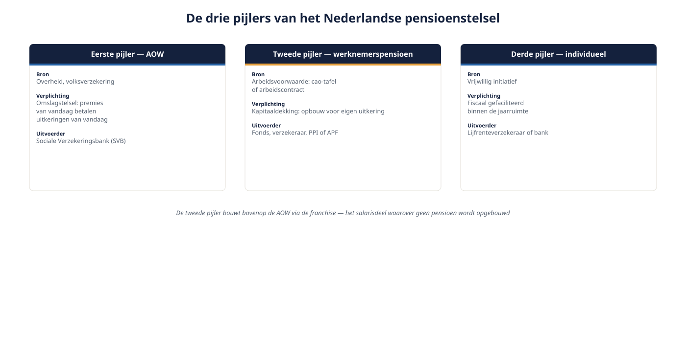
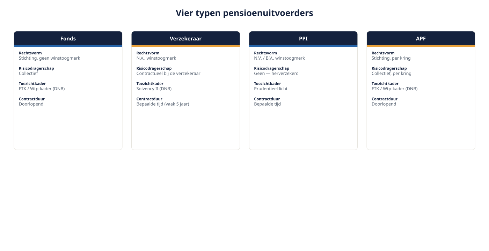
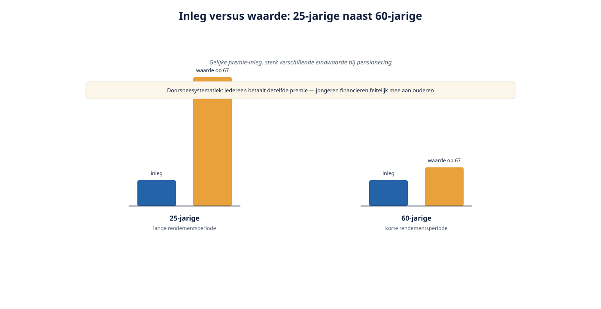

Deel 1 — Slidedeck
Het Nederlandse pensioenstelsel in vogelvlucht · 30 slides
Slide 1 — Titel
Deel 1: Het Nederlandse pensioenstelsel in vogelvlucht Cursus Nederlandse pensioenverzekering · Niveau 1 Docentnotitie: nog geen inhoud, alleen kennismaking. Vraag naar “de laatste pensioenvraag die je niet kon beantwoorden”.
Slide 2 — Waar we naartoe werken
- Dertig delen, drie niveaus
- Fondsen én verzekeraars, met gelijk gewicht
- Rode draad: Wtp of niet-Wtp, en het overgangsrecht
Slide 3 — Vandaag
- Drie pijlers
- Wie doet wat
- Vier uitvoerders
- Waarom het stelsel veranderde
- De kernvraag: Wtp of niet-Wtp
Slide 4 — Eerst even schrijven
Drie vragen, vijf regels, niet opzoeken, niet overleggen Docentnotitie: nulmeting opdracht 1.1. Niet plenair nabespreken.
Slide 5 — Drie pijlers

- AOW — overheid, omslag
- Werknemerspensioen — arbeidsvoorwaarde, kapitaaldekking
- Individueel — lijfrente, banksparen
Slide 6 — Pijler 1: AOW
- Volksverzekering, 2% per verzekerd jaar
- AOW-leeftijd 2026: 67 jaar
- Vanaf 2028 gekoppeld aan levensverwachting
- De Wtp verandert hier niets aan
Slide 7 — Pijler 2: de tweede pijler
- Ontstaat aan de cao-tafel of in het arbeidscontract
- Werkgever moet onderbrengen bij een uitvoerder
- Onderwerp van deze hele cursus
Slide 8 — Pijler 3
- Vrijwillig, binnen de jaarruimte
- Zzp’ers, pensioentekort, inkomen boven de aftoppingsgrens
- Komt terug in deel 26
Slide 9 — De franchise verbindt pijler 1 en 2
Salaris − franchise = pensioengrondslag Docentnotitie: niet doorrekenen, dat is deel 11. Alleen het principe.
Slide 10 — Wie doet wat
- Sociale partners: afspreken
- Werkgever: toezeggen en onderbrengen
- OR: instemmen (buiten verplichtgesteld bpf)
- Uitvoerder: uitvoeren
- DNB en AFM: toezien
Slide 11 — Het drieluik
Wie belooft wat? Wie voert het uit? Wie draagt het risico? Docentnotitie: op de flap, blijft de hele cursus hangen.
Slide 12 — Opdracht 1.4
Pas het drieluik toe op drie regelingen Duo’s, 10 minuten
Slide 13 — Vier uitvoerders

Fonds · Verzekeraar · PPI · APF
Slide 14 — Het pensioenfonds
- Stichting, geen winstoogmerk
- Bpf, opf, beroepspensioenfonds
- Vermogen is van de deelnemers samen
- Doorlopende relatie, geen einddatum
Slide 15 — De pensioenverzekeraar
- Vergunning DNB, Solvency II
- Contract voor bepaalde tijd — meestal vijf jaar
- Draagt contractueel risico, tegen premie
Slide 16 — De PPI
- Alleen opbouwfase
- Mag géén verzekeringstechnisch risico dragen
- Risicodekkingen herverzekerd
- Uitkeringsfase: shoppen of naar een verzekeraar
Slide 17 — Het APF
- Sinds 2016
- Eén organisatie, gescheiden kringen
- Fondsuitvoering zonder eigen bestuur
Slide 18 — Vergelijk zelf eerst
Opdracht 1.3 — tabel invullen uit het hoofd Docentnotitie: invullen vóór de uitleg, niet erna.
Slide 19 — De rij die er echt toe doet
| Fonds | Verzekeraar | |
|---|---|---|
| Invaren bij Wtp | uitgangspunt | in beginsel niet |
| Docentnotitie: opent deel 5, sluit in deel 16. |
Slide 20 — Waarom veranderde het stelsel?
Drie weeffouten:
- Schijnzekerheid
- Doorsneesystematiek
- Aansluiting arbeidsmarkt
Slide 21 — Schijnzekerheid
- Toezegging in euro’s, afhankelijk van de dekkingsgraad
- Jaren niet indexeren, soms korten
- De belofte bleek een verwachting
Slide 22 — Doorsneesystematiek

- Gelijke premie, gelijke opbouw
- Jongeren financieren mee
- Wie halverwege uitstapt, betaalt zonder opbrengst
Slide 23 — Arbeidsmarkt
- Meer baanwisselingen, meer zelfstandigen
- Een stelsel voor veertig jaar bij één werkgever
Slide 24 — Tijdlijn

2019 akkoord · 1 juli 2023 Wtp in werking · 2023-2027 transitie · 1 januari 2028 uiterste datum · 2037 einde fiscale compensatieruimte
Slide 25 — Let op de nuance
De verlenging naar 2028 was bedoeld om de uitvoeringspiek te spreiden Niet om iedereen een jaar rust te geven
Slide 26 — De kernvraag
Wtp-conform: premieovereenkomst, vlakke premie, binnen de fiscale grenzen, nieuw nabestaandenpensioen Niet-Wtp-conform: uitkeringsovereenkomst, of premie met leeftijdsstaffel
Slide 27 — Onthoud deze zin
Niet-Wtp is geen fout; niet-Wtp zonder geldige overgangsgrond ná de uiterste datum wel.
Slide 28 — De vier analysevragen
- Welk type overeenkomst?
- Wie voert uit?
- Wtp-conform, ja of nee?
- Zo nee: welke overgangsgrond, tot wanneer? Docentnotitie: vraag 4 wordt in de praktijk het vaakst overgeslagen.
Slide 29 — De casus
- Meridiaan Pensioen N.V. — verzekeraar
- Bpf Techniek & Installatie — verplichtgesteld fonds
- Pensioenfonds Delta Chemie — opf, krimpend
- Van Doorn Techniek B.V. — 85 medewerkers, progressieve staffel
- Karel (58) en Yasmin (26)
Slide 30 — Huiswerk en doorkijk
- Opdracht 1.7 en 1.8
- Deel 2: de driehoek — pensioenovereenkomst, uitvoeringsovereenkomst, reglement